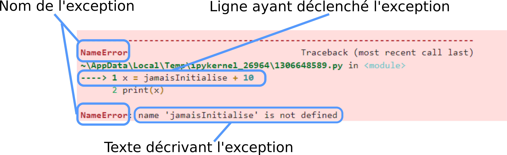

6. Les erreurs en Python#
temps approximatif : 45min
Objectifs
A l’issue de ce chapitre, vous serez capable de :
expliquer la différence entre les exceptions, les erreurs de syntaxe et les erreurs d’execution
gérer des exceptions pourraient intervenir à l’aide des commandes
tryetexceptlister les principales exceptions
déclencher une exception
expliquer un message d’erreur et apporter la correction adéquate
quitter une boucle infinie
6.1. Les exceptions#
6.1.1. Qu’est ce qu’une exception ?#
Les erreurs qui se produisent lors de l’exécution d’un programme sont appelées des exceptions. Une exception est un objet qui contient des informations sur le contexte de l’erreur. Lorsqu’une exception survient et qu’elle n’est pas traitée alors elle produit une interruption du programme et elle affiche un message. Il est utile de connaître les principales exceptions.
Dans tous les cas le format d’une exception est :
{kind=link}
6.1.2. Les principales exceptions#
6.1.3. NameError#
L’exception NameError est déclenchée lorsque l’on essaie d’utiliser une variable qui n’est pas définie ; c’est à dire qu’aucune valeur n’a été affectée à cette variable.
x = jamaisInitialise + 10
print(x)
---------------------------------------------------------------------------
NameError Traceback (most recent call last)
Cell In[1], line 1
----> 1 x = jamaisInitialise + 10
2 print(x)
NameError: name 'jamaisInitialise' is not defined
6.1.4. TypeError#
L’exception TypeError est déclenchée lorsque l’on essaie d’utiliser en paramètre (on dit aussi opérande) d’une fonction une valeur qui n’a pas le bon type. C’est la même chose lorsque l’on tente de faire une opération avec des opérandes qui n’ont pas le bon type.
abs('Coucou')
---------------------------------------------------------------------------
TypeError Traceback (most recent call last)
Cell In[2], line 1
----> 1 abs('Coucou')
TypeError: bad operand type for abs(): 'str'
'Coucou'**2
---------------------------------------------------------------------------
TypeError Traceback (most recent call last)
Cell In[3], line 1
----> 1 'Coucou'**2
TypeError: unsupported operand type(s) for ** or pow(): 'str' and 'int'
6.1.5. ValueError#
L’exception ValueError est déclenchée lorsque l’on essaie d’utiliser en paramètre d’une fonction une valeur qui a le bon type mais dont la valeur ne peut être utilisée.
int('123') # Ca fonctionne. La chaine peut etre convertie en int
123
int('123.4') # Ca ne fonctionne pas. La chaine ne peut etre convertie en int
---------------------------------------------------------------------------
ValueError Traceback (most recent call last)
Cell In[5], line 1
----> 1 int('123.4') # Ca ne fonctionne pas. La chaine ne peut etre convertie en int
ValueError: invalid literal for int() with base 10: '123.4'
6.1.6. IndexError#
L’exception IndexError est déclenchée lorsque l’on essaie d’accéder à un élément d’une liste (ou d’un tuple) avec un indice qui n’est plus grand que la taille de la liste. Cette erreur est aussi déclenchée si l’indice négatif mène en dehors de la liste.
ma_liste = ['a', 'b', 'c']
ma_liste[5]
---------------------------------------------------------------------------
IndexError Traceback (most recent call last)
Cell In[6], line 2
1 ma_liste = ['a', 'b', 'c']
----> 2 ma_liste[5]
IndexError: list index out of range
ma_liste = ['a', 'b', 'c']
ma_liste[-4]
---------------------------------------------------------------------------
IndexError Traceback (most recent call last)
Cell In[7], line 2
1 ma_liste = ['a', 'b', 'c']
----> 2 ma_liste[-4]
IndexError: list index out of range
6.1.7. ZeroDivisionError#
L’exception ZeroDivisionError est déclenchée lorsque l’on essaie de diviser un nombre par la valeur 0 (de type ‘int ou float`).
6.1.8. Gérer les exceptions#
Il est possible de détecter les exceptions qui apparaitraient lors de l’exécution. Pour cela nous disposons d’une paire de mots clés : tryet except.
La syntaxe la plus simple est la suivante
try :
# instruction pouvant générer une exception
except :
# instruction à exécuter quand une exception est détectée
L’exemple ci-dessous peut parfois entrainer une exception ZeroDivisionError (une chance sur 3).
import random
n = random.randint(0,2) # un nombre aléatoir entre parmi 0, 1 ou 2
x = 100 / n
print(x)
50.0
Il est donc préférable de gérer cette exception.
# 4 valeurs différentes à tester
ma_var = [1, 2, 3]
ma_var = 'trois'
ma_var = '12.34'
ma_var = 12.34
ma_var = '12'
#
for ma_var in [ 12.34, '12', '12.34', True, 'trois', [1, 2, 3] ] :
try :
mon_entier = int(ma_var)
print(mon_entier)
except (TypeError) as e :
print("Ce type de valeur ne peut être converti en int")
print(e)
except (ValueError) as e :
print('Cette chaine ne peut être convertie en int')
print(e)
else :
print(10 * mon_entier)
12
120
12
120
Cette chaine ne peut être convertie en int
invalid literal for int() with base 10: '12.34'
1
10
Cette chaine ne peut être convertie en int
invalid literal for int() with base 10: 'trois'
Ce type de valeur ne peut être converti en int
int() argument must be a string, a bytes-like object or a number, not 'list'
ATTENTION
TRAVAIL EN COURS. Revenez plus tard.
6.1.9. Déclencher une exception#
Il peut être intéressant quand on code de déclencher un exception. Par exemple, lorsque vous effectuez un control de cohérence des données que vous venez de récupérer (vous avez récupéré un fichier de températures de l’océan atlantique et vous avez repéré des températures inférieures à -20 degrés).
Pour cela on utilise le mot clé raise.
temperatures_hebdo = [17.8, 18.1, -99, 17.4, 17.1, -99, 17.0 ]
if any([x < -20 for x in temperatures_hebdo]) :
raise ValueError('les données de température récupérées semblent abérantes')
---------------------------------------------------------------------------
ValueError Traceback (most recent call last)
Cell In[12], line 2
1 if any([x < -20 for x in temperatures_hebdo]) :
----> 2 raise ValueError('les données de température récupérées semblent abérantes')
ValueError: les données de température récupérées semblent abérantes
6.2. Les erreurs de syntaxe#
Les erreurs de syntaxe sont des erreurs que l’on peut connaitre (si on est attentif ou un automate) avant même de lancer l’exécution du code. Beaucoup d’outils repèrent ce type d’erreurs et les soulignent pour que vous puissiez les corriger avant de lancer l’exécution de votre code. Elles ne peuvent être gérées pendant l’exécution. Voici quelques exemples
6.2.1. oubli d’un mot clé#
for i range(10) : # Il manque le in devant range
print(i)
Cell In[13], line 1
for i range(10) : # Il manque le in devant range
^
SyntaxError: invalid syntax
6.2.2. mot clé au mauvais endroit#
a = 10
for i in range(a) continue : # continue n'a rien à faire là
print(i)
Cell In[14], line 2
for i in range(a) continue : # continue n'a rien à faire là
^
SyntaxError: invalid syntax
6.2.3. oubli d’un symbole (comme un : ou une paranthèse)#
for i in range(10) # Il manque le :
print(i)
Cell In[15], line 1
for i in range(10) # Il manque le :
^
SyntaxError: invalid syntax
6.2.4. faute de frappe sur un mot clé#
foor i in range(10) : # Il y a 2 o
print(i)
Cell In[16], line 1
foor i in range(10) : # Il y a 2 o
^
SyntaxError: invalid syntax
6.2.5. indentation incorrecte#
for i in range(10) : # Il y a 2 o
print(i)
Cell In[17], line 2
print(i)
^
IndentationError: expected an indented block
6.2.6. block vide#
import random
if random.random() > 0.5 :
else :
print('perdu !')
Cell In[18], line 3
else :
^
IndentationError: expected an indented block
6.3. Les erreurs d’exécution#
6.3.1. La boucle infinie#
Il arrive que l’on ne se rende pas compte qu’il y a une erreur dans notre code et qu’il n’existe aucun moyen de sortir d’une boucle while. C’est à dire que la condition qui suit le mot clé while ne vaut jamais False. On se retrouve alors dans une boucle infinie. Pour en sortir, il n’existe qu’un seul moyen : interrompre l’exécution du code. Dans un notebook, cela se fait en cliquant sur le bouton stop (un carré), qui s’appelle ausi interrupt the kernel (que l’on retrouve aussi dans le menu kernel. Dans l’exemple ci-dessous, la boucle infinie est évidente mais cela n’est pas toujours le cas. La fonction sleepdu module timepermet de mettre en pause l’exécution pendant un certain nombre de secondes (paramètre de la fonction). Dans la capture ci-dessous, le bouton interrupt the kernel a été pressé après 3 itérations. L’interuption provoque un message d’erreur KeyboardInterrupt.
{kind=link}